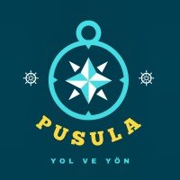
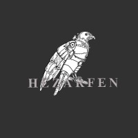
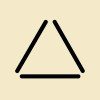

Profesyonel Deneyim

Mayıs 2025 - Haziran 2025
Proje Lideri
AYBU ÖĞMER | Burai Tech
- LLaMA 3 ve PySide6 kullanarak belge-etkileşimli bir AI asistanı tasarlamak ve geliştirmek için bir ekip yönettim.
- Görev atamaları yaptım, prompt mühendisliği yaptım ve modüler bir mimari tasarladım.
- NLP özellikleri geliştirdim (özetleme, yeniden ifade etme, soru-cevap).
- Çoklu dil yeteneklerini, dosya ayrıştırmayı (PDF, DOCX, TXT) test ettim ve avatar video oluşturma için FFmpeg entegre ettim.

Ekim 2024 - Günümüz
Gömülü Yazılım Geliştirici
PUSULA USV, Ankara, Türkiye
- Python kullanarak insansız deniz araçları için otonom hareket algoritmaları tasarladım.
- Jetson board üzerinde Ubuntu 22.04 çalıştıran sistemde ROS 2 ve MAVROS düğümlerini otomatik başlatmak için systemd servisleri tasarladım ve dağıttım.
- Elektrik ekibiyle işbirliği yaparak Pixhawk motor testleri ve GPS dahil entegrasyon ve canlı sensör testleri gerçekleştirdim.
- Gerçek zamanlı ROS iletişimi ve telemetri kontrolü için Linux tabanlı sistem yapılandırması yaptım.
- Gerçek deniz aracı üzerinde testler gerçekleştirdim.
Ağustos 2024 - Mayıs 2025
Bootcamp Eğitmeni & Öğrenci Mentorü
Ankara Yıldırım Beyazıt Üniversitesi, Ankara, Türkiye
- Üniversite öğrencilerine front-end web geliştirmeyi tanıtmak amacıyla bir yaz bootcamp'i yönettim. HTML, CSS ve web'in temel çalışma prensiplerine odaklanarak, yeni başlayanların güven kazanmalarına ve basit, işlevsel web siteleri oluşturmalarına yardımcı oldum.
- Üniversitemi birçok uluslararası konferansta temsil ettim, Öğrenme ve Öğretme Merkezi'ndeki girişimlerimizi sergiledim.
- "Teknoloji Personelinizle Tanışın" programı altında mühendislik birinci sınıf öğrencilerine teknolojik destek ve mentorluk sağladım.

Eylül 2023 - Haziran 2024
Aviyonik Takım Üyesi
Aybü HEZARFEN Kulübü | Gökçen Roket Projesi, Ankara, Türkiye
- Sistem için uygun sensörleri belirlemek üzere araştırmalar yaptım.
- Uçuş kontrol kartına katkıda bulundum ve sensörlerin entegrasyonuna yardımcı oldum.
- Aviyonik sistemin ilk testlerini ekip ile gerçekleştirdim ve Teknofest için sistem dokümantasyonunu hazırladım.
Eğitim
Eylül 2023 - Haziran 2028 (Beklenen)
Lisans, Bilgisayar Mühendisliği
Ankara Yıldırım Beyazıt Üniversitesi, Ankara, Türkiye
Mevcut GPA: 3.36/4.00
Aktiviteler ve topluluklar: AYBÜ Hezarfen Öğrenci Kulübü & Developer Students Community & IEEE Öğrenci Kolu - AYBU

Eylül 2019 - Haziran 2023
Lise Diploması
Tevfik İleri Anadolu Lisesi, Ankara, Türkiye
96.43 ortalama ile mezun oldum
Gönüllü Çalışmalar

Ekim 2023 - Şubat 2024
Podcast Sunucusu
Trio of Thought, Ankara, Türkiye
- AI teknolojilerine tutkulu bir mühendislik öğrencisi olarak, iki meslektaşımla birlikte 'Trio of Thought' podcast'ini yayınladım. Podcast sunucusu olarak görev yaptım ve yeni teknolojileri, özellikle AI alanındaki gelişmeleri tartıştık. Sunuculuğun yanı sıra transkript yazarlığı da yaptım.
- Spotify hesabımıza aşağıdaki linkten ulaşabilirsiniz.
Trio of Thought (Spotify Podcast)

Mart 2020 - Temmuz 2023
Yazar & Editör
Ankara'daki Sivil Toplum Kuruluşları, Türkiye
- Çeşitli okul dergilerinde, bloglarda ve yerel sivil toplum kuruluşlarında yazar olarak çalıştım.
- Bir süre sonra yazı becerilerimin etkisiyle blog sitelerinden birinde editör oldum. 8 ayda 50'den fazla makale yayınladık. Bu süreçte yazım ve bağlamsal hataları neredeyse sıfıra indirdim.
- Şu anda hobi olarak devam ettiğim yazarlık kariyerimde 10'dan fazla yazım bulunuyor. Yazılarımdan bazılarını paylaştığım bir blog sitesine aşağıdaki linkten ulaşabilirsiniz.
Tarihi Kalem (Blog Sitesi)